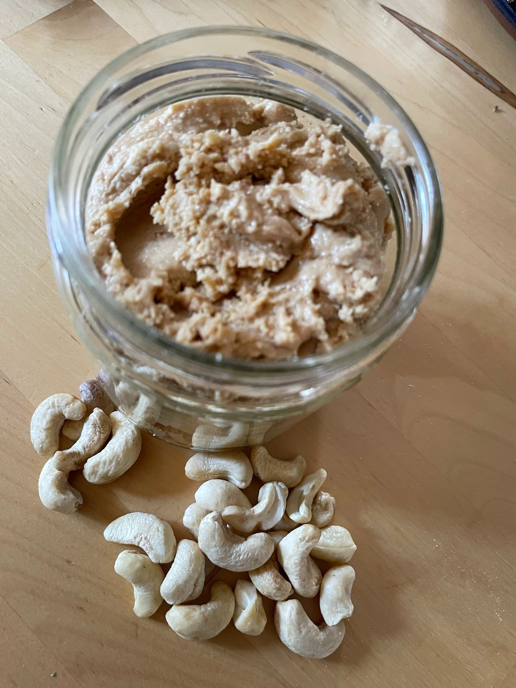

Nussmus
Nach einem Rezept von Frau Janik |
 |
Zutaten: 350g Cashews oder Walnüsse, Mandeln oder eine Mischung davon |
Die Nüsse bei 180°C für 10 Minuten im Backofen anrösten, um das Öl in den Nüssen zu locken.
Nach dem Abkühlen kommen die Nüsse in den Food-Prozessor oder Hochleistungsmixer und dann geht es rund.
Das Ganze dauert mindestens 10 Minuten, kann aber auch eine halbe Stunde dauern. Zwischendurch könnte es notwendig werden, alles am Rand klebende zu lösen.
Zwischendurch entsteht im Behälter ein kreisender Ball.
Den Moment, wann sich das Öl aus den Nüssen löst, erkennst Du daran, dass aus dem gummiballartigen Klumpen eine fließende Masse wird.
Jetzt ist das Mus fertig.
Guten Appetit
Zurück zum Inhaltsverzeichnis